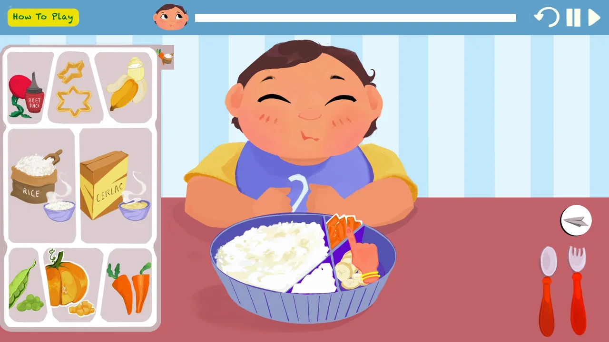
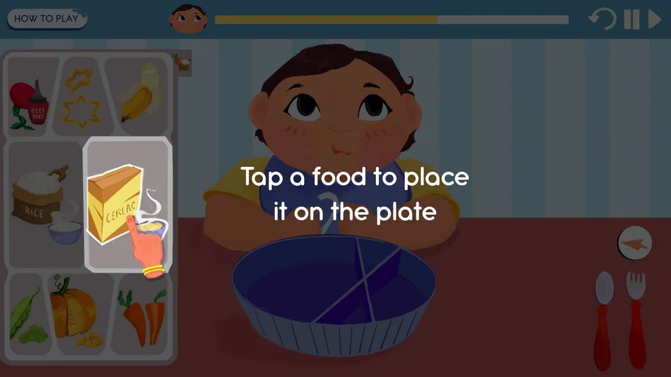
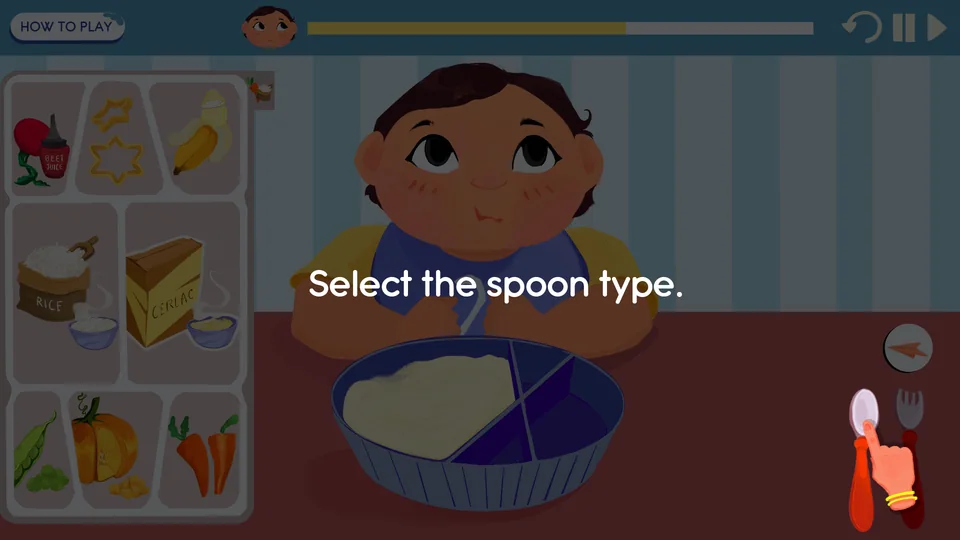
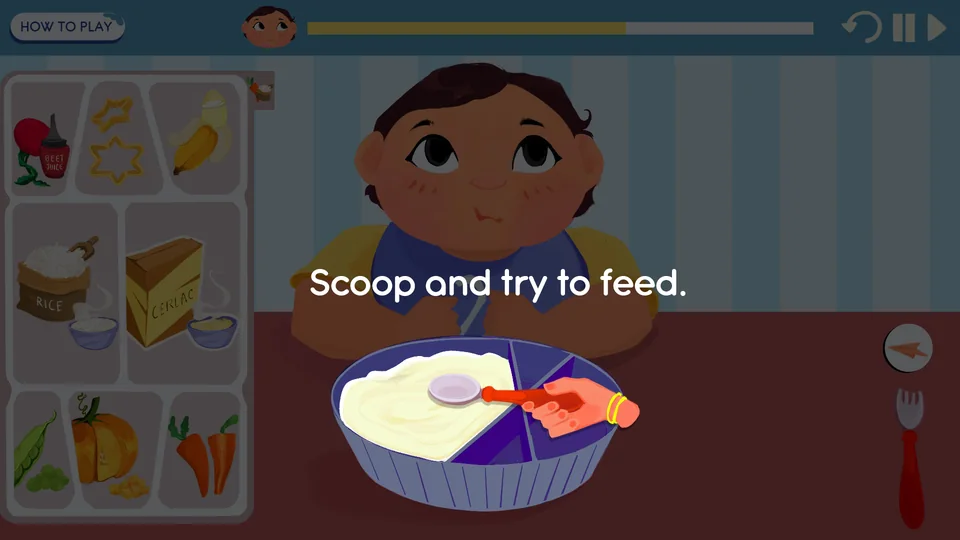
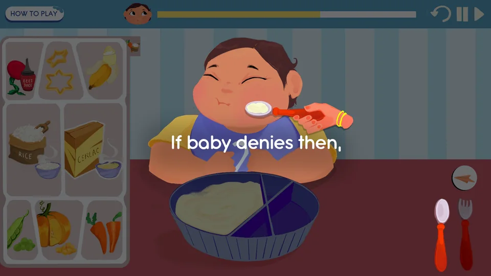
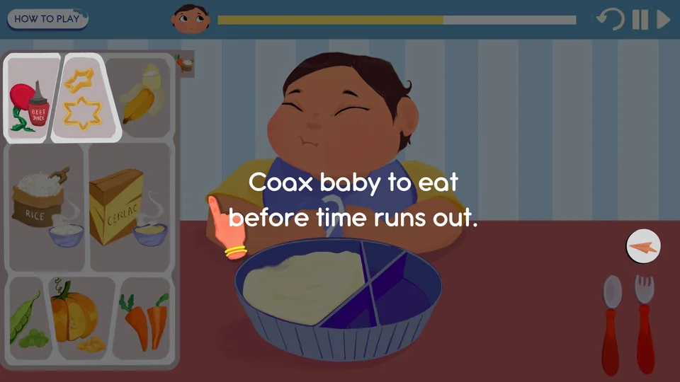
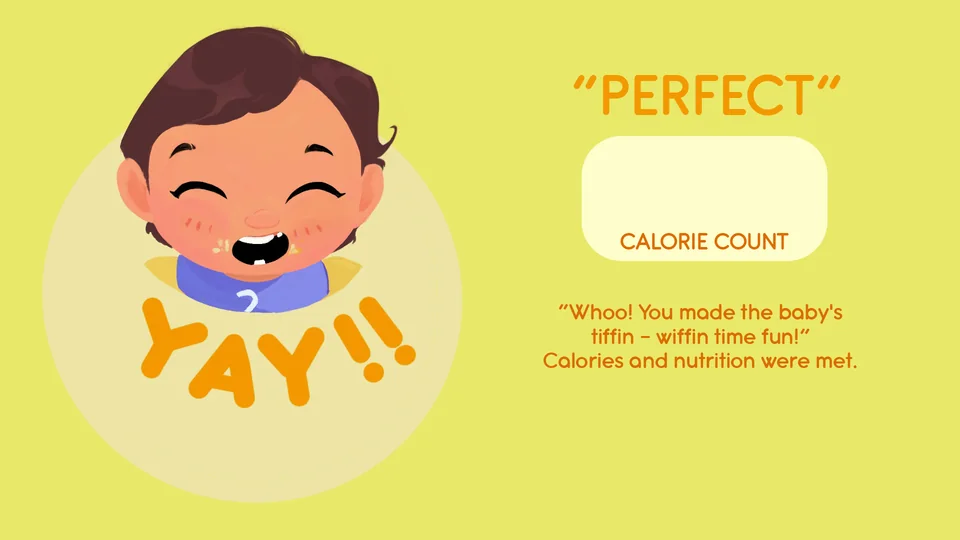
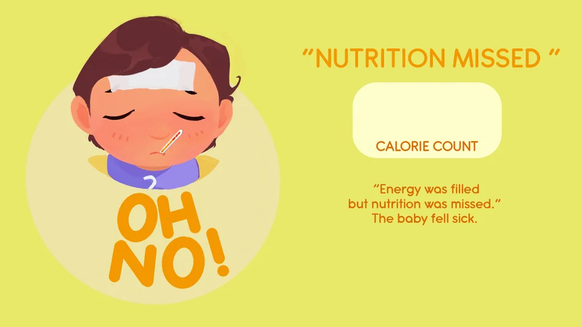
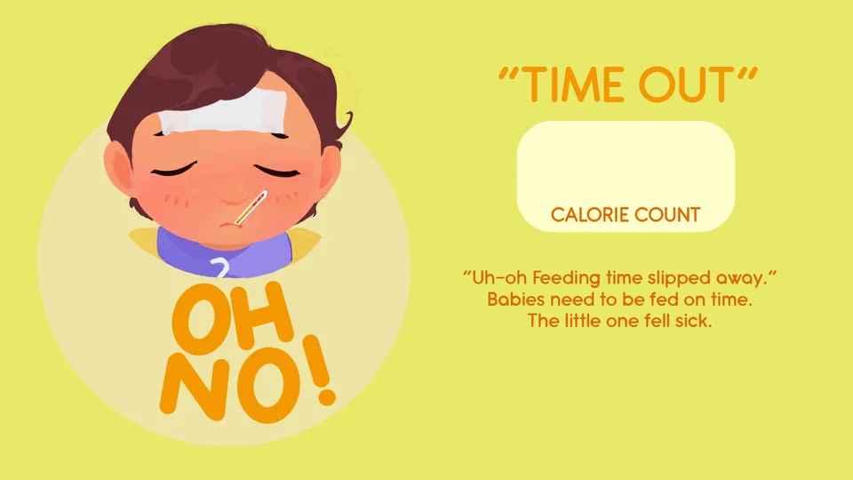

Feeding the baby
The cursor changes with the job: a hand to pick foods, then a fork or a spoon with the food sprite attached. The sprite swaps when the food is shaped or coloured, so the player always sees what they are about to offer.

Feed a fussy toddler a healthy meal, one bite at a time, before tiffin time runs out.
Tiffin Wiffin puts you in charge of a fussy toddler's mealtime. Choose foods for the bowl, pick the right cutlery, and coax the baby into eating with aeroplane spoons, star-shaped food and colourful beet juice. Hit the calorie target with real, nutritious food before the timer ends, or the baby falls sick.
It is an applied game about baby nutrition, made for the Science Gallery Bangalore exhibition on the theme “Calorie”. I did the game design and programming, and Bhaswati Gogoi (NID) made the art.
The game takes a short time to load, especially the first time you play.
⏸ The game is paused. Click on the game screen to resume.
Every round is two minutes long. The calorie counter climbs with every bite, and the meal is judged when the timer ends.
Tap foods to place them on the plate
A fork for carrot and banana, a spoon for everything else
Scoop and drag the food to the baby's mouth
Win them over with the trick the baby asks for
Exhibition visitors walk up and play with no one to explain the rules, so a five-step illustrated tutorial plays before every round.





Refusal is normal for toddlers, so it is the heart of the game. Each bite has a 35% chance of being accepted straight away. Otherwise the baby asks for one of three tricks that real parents use, weighted by the food on the spoon.
The cursor changes with the job: a hand to pick foods, then a fork or a spoon with the food sprite attached. The sprite swaps when the food is shaped or coloured, so the player always sees what they are about to offer.

Trace a dotted flight path to “fly” the spoon in. Stray from the line and the trick fails. Every food accepts it.
Turn pumpkin or rice into a star shape, because fun shapes make food more appealing.
Add beet juice to make rice or cereal pink, because colourful food catches a toddler's eye.
Each food has a fixed number of bites and calories per bite, the cutlery it needs, and the tricks it accepts.
| Food | Bites | kcal / bite | Bowl total | Cutlery | Tricks accepted |
|---|---|---|---|---|---|
| Rice + peas | 7 | 40 | 280 | Spoon | Aeroplane, star, colour |
| Rice | 7 | 40 | 280 | Spoon | Aeroplane, star, colour |
| Cerelac | 7 | 50 | 350 | Spoon | Aeroplane, colour |
| Banana | 4 | 30 | 120 | Fork | Aeroplane |
| Carrot | 4 | 25 | 100 | Fork | Aeroplane |
| Pumpkin | 3 | 15 | 45 | Spoon | Aeroplane, star |
Only one base (rice, rice + peas or Cerelac) fits in the bowl, so the healthiest full meal is about 545 kcal.
Rice and Cerelac can't share the bowl, so the player has to choose between a whole food and an instant one.
Peas can only be added to untouched rice, turning it into the more nutritious rice + peas.
The meal is judged when the timer ends. Two of the three endings are failures, and each one teaches something different about feeding a baby.



The game was made for gallery visitors of all ages at the Science Gallery Bangalore exhibition on the theme “Calorie”. It is an applied game: the fun carries a message about baby nutrition.
| What the player learns | How the game teaches it |
|---|---|
| Calories are not nutrition | You can hit the calorie target by spooning in only instant cereal, but the baby still gets sick: “Energy was filled, but nutrition was missed.” |
| Food choice matters | Whole foods such as rice with peas, vegetables and fruit lead to the healthy ending. |
| Feeding toddlers takes patience | Refusal is normal. The game models the real strategies parents use: the aeroplane spoon, fun shapes and colourful food. |
| Timing matters | Babies need regular, timely meals. Running out of time with too few calories ends in “Time out”. |
A short, fixed round keeps the queue moving at a busy exhibit, and the timer adds gentle pressure.
Tap, pick and drag are the only actions, so visitors of any age can play straight away.
Intro → how to play (five illustrated steps) → a two-minute round → an ending with the final calorie count → replay. The music changes mood for each ending.